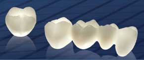

Cercon® is the brand for smart ceramics in the high strength/high esthetic segment highlighting clinical safety, process safety and future safety. For 10 years now, Cercon® smart ceramics has been a hallmark of application reliability and clinical safety. Numerous scientific studies investigating a broad range of indications have shown that Cercon® is just as safe as the gold standard of metal ceramics. Since the introduction of Cercon® in 2001, over 5.7 million restorative units have been produced worldwide. Cercon® has a host of possible applications in your dental laboratory, allowing you to realize fixed all-ceramic restorations for a broad range of dental indications using CAD/CAM support. Medical treatment in India is also not lagging behind in providing the best of orthodontic services to its patients.
Compartis® is the brand for all outsourced processes which Dentsply provides to its customers. By sending digital design data or a cast model customers can optimize their lab processes in the most efficient way. Compartis® service featuring a great variety of materials for cemented and screw-retained restorations completes our well-conceived prosthetic offering, letting you mix or match all your prosthetic components individually.
Worth a dekko!
When we talk to each other, our gaze falls often on the mouth. In this, we naturally focus particularly on the teeth and paying increasing attention to their appearance. In daily contact with people, flirting in private or presenting yourself for a new job, beautiful teeth play a big part in helping you look great.
With
Cercon smart ceramics
, all restorations can be shaped so naturally that they cannot be distinguished from your real teeth.